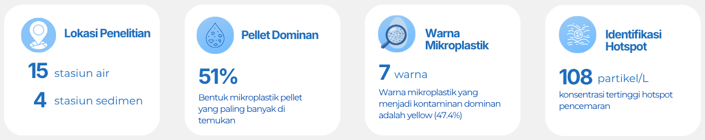
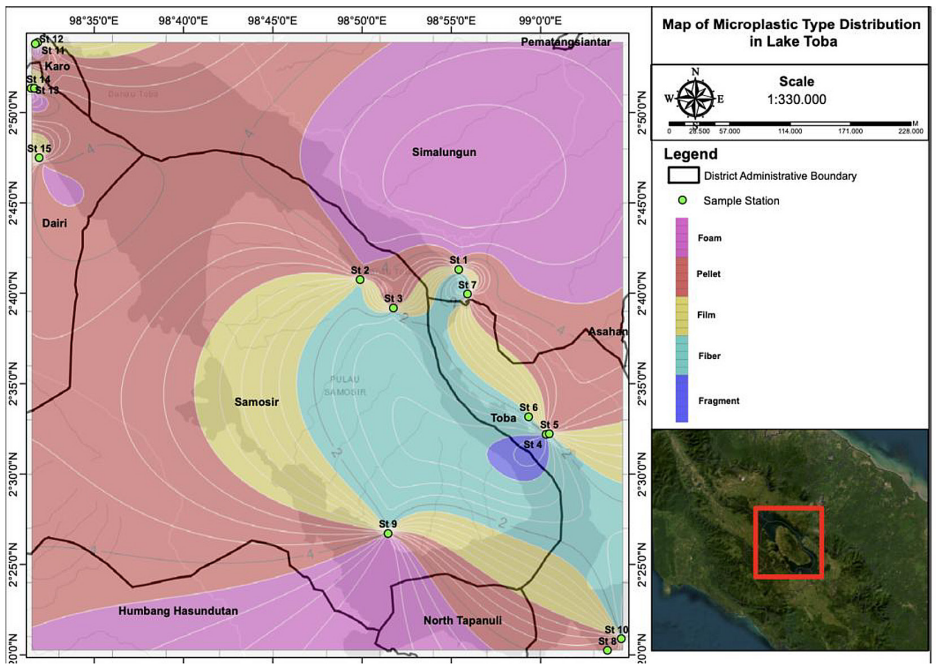
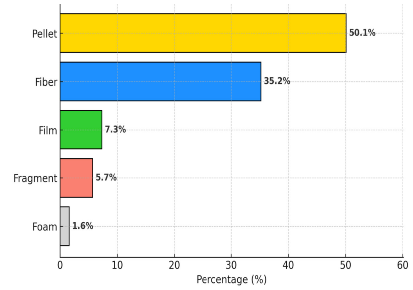

Highlight Penelitian
Penelitian ini mengungkapkan kondisi pencemaran mikroplastik di Danau Toba melalui kombinasi survei lapangan, penginderaan jauh menggunakan citra Sentinel-2, dan analisis laboratorium berbasis FTIR. Hasil penelitian memberikan informasi mengenai sebaran, karakteristik, sumber potensial, serta hotspot mikroplastik yang dapat menjadi dasar dalam pengelolaan dan mitigasi pencemaran plastik di ekosistem perairan.

Hasil & Visualisasi Data

Kontur pola distribusi mikroplastik di Danau Toba

Persentase jenis mikroplastik dalam sampel air dari Danau Toba